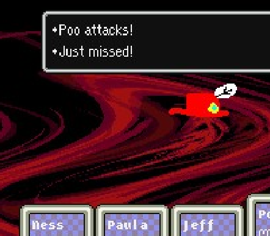

By Radiation (2007)
original post from starmen.net
Chapter 1: The Angelic Orbs
“Holy spheres on a stick, Paula! That dingo’s gonna chow down on those babies
like tiny, well-dressed wieners at a Halloween funfest,” Ness giggled as the hunky hound
clawed its way toward the sack of babies he was dangling. Hours later, the place was
covered in hot sauce. But that story is totally unrelated, and so I won’t be telling it today.
Chapter 2: No, this is awesome I swear
It was the eve of Halloween, and Ness sat idly in front of the wall. Ness was very
bored. “I am bored,” Ness stated. Yeah, he can talk. It’s my fricking story. He learned to
talk after he ate a bowl of alphabet soup. The letters went up into his brain and taught him
language. It was awesome; you had to be there. There was hot sauce everywhere.
Chapter 2 and a half: Clarification
“Hey, Tracy,” Ness prodded. “You wanna go trick-or-treating with me?” Tracy
stopped dead. A sliver of blood ran its way out of her eye and onto her barely-protruding
lips.
“Aren’t you too old?” Tracy asked.
“Too old?” Ness one-upped, giving a hearty smile.
The smile ripped off his face and exploded, leaving shards of euphoria lodged
inches into everything in the room. Ness’s jaw unhinged and his eyes bulged from his
sockets. An unearthly roar filled the room, similar to the sound you hear when an
elephant vomits a tow truck into the side of the Empire State Building, as…
Ness, screaming, his clothing torn due to the rapid augmentation of his muscles,
whooped an enormous, horrifying cackle. The room a hurricane, Tracy stood unmoving
in the eye of it, her hair whipping about her body like cotton candy. The hulking mass
approached, gripping her neck with its meaty claws.
“PSI… PSI OFFENSE UP OMEGA!!” it shrieked, raising its other arm to the
rapidly spinning room. He – no – it – grinned, great breaths changing the ebb and flow of
the very room itself. Papers swirled like dancing razors, windows fogged, unfogged, and
fogged again. Tracy didn’t move. She hung quietly, eyes empty. Its hellish smile curled
into a sour frown, eyes narrowing but still centimeters out of its head.
Tracy smiled. The room accelerated, pulsing at a horrifying rate. The monster’s
face erupted with the zenith of fear as its facial features scrunched together. Possessed
with fear, the monster raised its arms and bellowed one last cry:
“PSI ROCKIN’ OMEGA!!!”
Suddenly, every atom in the house was psychically split and rearranged, rupturing
the very essence of space and time itself and generating a massive shockwave laced with
a blinding flash of the primary colors of the visible spectrum. This was accompanied by a
terrible, heaven-rending sound and the first few notes of the American National Anthem.
Ness – now only known as Lord Blazer - held the tattered, bloody ribbon. It was
all that was left of his sister – no, of Onett. He crumpled it bitterly in his hand and
released the clotted dust into the stale air.
“Hahahah… heheheh…” He turned away from the ruins, limping slowly. He threw his
head over his shoulder and gave one last glance.
“I didn’t wanna go with you, anyway.”
Chapter 3: This is the rest of the story
It was a dark and stormy night. (Somewhere, a cat sat on a rock. That might not
seem like it’s important right now, but just remember it.) Ness sat quietly, twiddling his
thumbs. He had invited all of his friends over for a Halloween macaroni party and he
anxiously awaited their arrival. After all, he was too old for trick-or-treating, wasn’t he?
A knock at the door and the door – opened psychically – revealed Poo, always the early
man of the group.
“Hello, Poo,” Ness began, raising his eyebrows and stretching out a sly smile.
“Your name is that of human fecal matter,” Ness continued, winking. Poo rolled all five
of his eyes: Not only was this how Ness had greeted him ever since he ate that damned
alphabet soup, but also because he was dressed as Jeff.
“Your costume sucks,” Poo guessed. Ness wasn’t wearing anything defining; his guess
had to have at least a 50% chance of being correct.
“Close! My costume’s virtual reality!” Ness exclaimed, holding an invisible steering
wheel and buzzing his lips to make the sound of an excited motor.
“But you’re not in costume,” Poo returned. Ness’s eyes flashed in recollection of the
fabled events that had only happened half a chapter ago.
“That’s my point.” Ness gave a weary, aged smile and put his hands on his legs,
knowingly.
His eyes shot across to the window. A lightning bolt sliced the horizon, engulfing
the sky in light and streaking through the crisp autumn air like a bullet made of flaming
leaves. The room was silent after the boom, and Ness’s lucid eyes showed how emptily
maddening his point was to be.
Chapter 4: Badass Town
Jeff and Paula arrived on time, both dressed as Jeff as part of the group theme.
“Dork, dork, and dorky!” Kevin said, instantly popping in from another universe.
“Kevin? From Ed Edd and Eddy?” Ness laughed. “This is the greatest crossover ever.”
And it was. It was totally bangin’ mad. And don’t get me started about the hot sauce.
Chapter 5: Trick or Treating
It was high night – pumpkins littered the street in odd rows and columns, the full
moon creating the illusion of a rag-tag vegetable army. Fake ghosts and blonde boys in
empty masks trod along the streets, seemingly pulled by convection currents in the cool
night air. Ness, Paula, Jeff, and Poo, the fabled four: Once the chosen, now begging for
candy on the darkened streets of Twoson.
“How are you doing, guys?” Lier X. Agerate asked. The group wasn’t quite sure
how they made it into his house, but they were quite sure that living in a trashcan smells
much worse than living in a room full of garlic. Lier sat crosslegged, smiling and stroking
his stubble, waiting for the group to take their wandering minds and hands off the sudden
realization that all seven of them had somehow managed to fit inside the can.
“Trick or treat?” Jeff quickly spit out, partially hopeful at the prospect of candy, but
mostly just fearful at the idea of receiving something else – and knowing Lier,
toothbrushes were on the higher end of the spectrum, where normal people would put
candied robots and sugared firearms.
“I have just the thing,” Lier said, winking and pulling out a small, adorable kitten.
“Cute kitty?” Paula cooed – still full of fright.
“Close!” Lier grinned and in a horribly disturbing trick of the light, the kitty somehow
became six cloves of garlic, one for each of them.
“Eat them and you’ll get muscles like me,” Lier flexed and winked, still echoing the
attitude of the all-star football player he once was.
As the night went on, the group kept running into people they met with often
disappointing results: Broken candy from Apple Kid, which Jeff had to fix to turn into a
Flamethrower much to everyone’s confusion (especially the children who tried to eat it),
candied oranges from orange kid…
“Why couldn’t Dr. Andonuts just give out DONUTS?!” Paula asked, eyes still wide with
terror. Jeff agreed – the flesh eating nanobots were a gooey, greyish stretch, but they’d
seen worse.
“The baker that lets the flies land on his food,” Poo trembled. “He thinks that makes them
taste better?”
“You know, you know… buddies,” Ness catcalled egotistically. He put on a giant
smirk, putting his arms around his pals and huddling them in until they could smell his
putrid, moldy manbreath.
“If you want the real candy, we gotta go up to Old Man Giygas’s house,” he crooned.
“Otherwise we’re gonna be stuck getting blue hamburger patties from Carpainter and stag
beetles from old Mr. Saturn down the street, kapeesh?” The group was kind of nervous.
“But… Old Man Giygas’s house is off limits… and I heard it’s haunted!” Jeff didn’t
actually say – rather he peed his pants in such a way that it happened to make that exact
sound to the tune of the first few notes of All You Need Is Love slowed down.
“Come on, dorks!” Kevin laughed.
Ness laughed too. And so they went.
Chapter 6: Old Man Giygas’s House
Ness stepped into the dilapidated Old Man Giygas’s house, expecting to be met
with a fight. Instead, they heard footsteps. The group froze, halfway into the musty
corridor – was it Old Man Giygas? Was he even dead? Was he still alive? Was he a ghost
anyway? Unfortunately, their questions didn’t have time to be answered, because out
jumped whatever they heard: A tall, skinny girl about the group’s age with auburn
pigtails in an elegant red dress with spikes coming out the edges.
“I’m Barbarella Mary Jane Salmonella Giygas the Third,” she introduced herself
haughtily, with an air of friendlication.
“But my friends call me…”
“…Giygasina!” her and Ness squeaked together, harmoniously. The group was
apprehensive. Was this a trick? Was the oven on? Where is Waldo? Nobody knew, but
Ness’s mouth lay agape, eyes full of shock and fear. She was the most beautiful girl he
had ever seen. How pretty she was! She was like a wheelbarrow full of lipstick covered
in glitter with boobs.
“I think,” Ness began. “I am in love!” He finished, recovering.
“I dunno, she looks kinda… Giygasy, Ness! Do you think we can trust her?” Jeff
whispered, careful to not upset their newfound friend. Ultimately, it didn’t matter what
Jeff said. They were all in love (metaphorically of course) with Giygasina! She was
beautiful and smart and perfect in everyway. Also she made sweet sandwiches and played
Metroid. They played Twister and Metroid Prime for hours, stopping only to give the
little kids outside candy when they rang the doorbell.
The door rang for the thirteenth time. “I’ll get it!” Ness shouted, cheerily. He
excitedly grabbed the bucket of assorted candies and began to use PSI Teleport Alpha to
get a head start. Ness tore across the room and ripped the door straight off its handles in
his excitement, tossing it into the nearby couch. He hadn’t shown up yet! I’m finally
wrong about something! He smiled broadly with his eyes closed and opened them,
looking down to catch a glimpse of whatever unassuming local guy had clambered his
way up the steep hill before he stuffed him full of candy and sent him on his way. Ness
froze, one eye twitching.
A kid with a pumpkin for a head.
Chapter 7: Versus
“What a pleasant costume,” Ness lied through clenched teeth, voice dripping with
artificially sweetened poison. “Now get the hell out of here before I smash your head in
and stick a candle in it, you little freak.”
“Trick or trick.”
Ness gave the fruit-crowned, diminutive figure a cold stare.
“Get out. Get out of here. I know you’re not real.”
“Trick or trick.”
In one swift, animalistic movement, Ness tore into the pumpkin head with his
hands, ripping out seeds and sinewy orange flesh clear to the other side. Ness was filled
with the nauseating, sinking realization that the pumpkin head was not only empty, but
the clothes the kid was wearing were as well, as they fluttered gently to the ground. Ness
stuttered and turned around slowly, not sure what he was supposed to be saying.
“No... no… this solidifies it… this is… exactly what I thought would happen.”
Ness wasn’t quite sure if he was the one who said that or not, but historians give him
credit for it. He crouched and looked around maddeningly – she had to still be here,
somewhere. He didn’t want this kind of responsibility. Minutes passed, or perhaps hours
– and it soon became obvious to Ness that not only was there no immediate threat, but the
encounter had never happened. There was no pumpkin on the ground, no clothes left
from the child – all of it had been his own creation, as it was planned.
The clock struck thirteen.
“Let’s start the show.”
Chapter 8: The Show (duh)
As Halloween night drew to a close – children nestled up to their parents, gorging
themselves on synthesized tummy aches (or nanobots, depending on whose house they
went to) – something quite different was happening up at Old Man Giygas’s house. Ness
trod quickly and excitedly into the ancient mansion, pavement cracking beneath his feet
at every step. Each raised foot was a crescendo to the ever-growing heartbeat that had
become the soundtrack to his hurried gait. He shuffled his foot with every beat, creating a
bizarre percussion.
“Hello,” he spoke to the room previously full of his friends, which was now
empty.
The universe rumbled and shook, burning an image of his face, his body, twisting
and turning about, the electricity of his brain currents surging through all of existence.
His heartbeat permeated the vast reaches of the landscape of himself. As far as the eye
could see – it was Ness, Ness, Ness, Ness, Ness, Ness.
I didn’t realize it until now, but this entire universe was a creation of my own
whim – an almost virtual reality. As I realized my psychic powers, I realized more and
more of the nature of the universe – until it became quite clear to me that I was the only
thing in existence. Humans, stars, Pokey – all merely vessels to keep me occupied while I
realized my true potential as the creator of the universe. I confronted Giygas, my ultimate
fears… while I fought him, the reality of the situation caused me to realize my psychic
powers to the fullest… who did I see in the Eye of the Devil’s Machine? Whose name was
spoken? Yes, I’ve known for quite some time now that I am Giygas, that all of you are just
figments of my imagination, that I’ve been trapped in my own nightmare for all of
eternity – that I was the Apple of Enlightenment. I kept it to myself – I wanted my friends
so dearly to be real – and so they were. But as time grew on, I realized that they were
only genetic programs fashioned by my own mindset, and that they only did as I
commanded… what is free will? There is no free will if your actions are already
determined by God! There is no escape from my own power – there is no death for the
immortal! What’s the point of reading a book when you’re the one writing it?
The universe beat irregularly, Ness’s red, gaseous visage stretching and reverting,
his mind fashioned of crimson plasma.
I will have a hat, Ness thought.
It will be very pretty.
What will the adventurers think when they encounter a floating, scarlet alien skull
with a feminine hat!? Won’t that be funny?
There has to be a higher being than me. There has to be real free will somewhere
in all these universes, in all these dimensions. Why don’t I relive these pitiful adventures
for these higher beings? So they can see the pain of my burden!? The pain of the
realization that I control the universe, that all seeming variables and movements are my
will alone? Hahahahaha… you know, when you control the universe, nothing is really
funny anymore.
THE UNIVERSE IS MY OYSTER, Giygas thought. He knew he was going to have
to bring them all back. Even though they were all just thoughts of him, the “faith,” there
was a sickening sadness in knowing that he had let these thoughts – these people – die,
because he had neglected to realize them.
Have you ever had a dream about someone who wasn’t real, and then you wake
up and you swear to keep them in your mind, so they can always be “real?”
Imagine dreaming all your life.

The truth to EarthBound is – nothing in the game is your choice. Ness makes
choices for you, he moves because he wants to – all random variables, all deaths, are all
intentional. Ness, Giygas, whoever you want to call him – knows the end, he knows when
the console goes on and off.
Free will is an illusion. But does that make the game any less fun? It’s the
experience, the things you learn, the emotions you feel – those are yours alone, and no
one can take them from you. And that’s why you should play Metal Gear Solid 2.
Fission Mailed, Giygas thought. The Fission has been Mailed.
Chapter 9 – The Perfect Universe
Time and space stained red, oozing into every fiber of Planck and String. The
universe was finally at perfect, empty harmony.
At a remote corner of this picturesque purgatory, a tiny, unknown speck sat
silently. The universe, realizing this, bent toward the empty speck, burning wings and
rosy maw stretching and collapsing erratically across the foreign object. The universe
approached, terrified – everything was accounted for, except for this dot… was the
universe’s very Provider going mad? Working feverishly, the unglued the dimension
devoted all of its discerning ability to identifying that dot.
“You’re too old for this, Ness,” Tracy said.
The universe released a collective gasp, followed by a deafening scream in all directions.
I killed you! You aren’t alive!
“Huh? No, I just slipped out of your grip and bolted for it,” Tracy pointed out
very plainly.
What!?
“I used the same trick when I dressed up as a pumpkin kid... for all intents and purposes,
I’m totally unaccounted for. Have you ever heard of the Chaos Theory?”
No matter. You, the unsightly blemish, will be blotted out! Inexplicable psychic power
triggered bright red shocks of heat to rippling across the horizon, leaving a path of icy,
solidifying breath. Just missed! Just missed!? That wasn’t supposed to… to…
With the crack of a baseball bat, the universe flashed a sickly green. SMAAASH!
531 damage to Giygas! Nooo!… but… the universe is still mine! Giygasina… who would
name themselves that?! I chose it! A verification of my immense psychic energy…
Giygasina stepped out from behind Tracy, her mask removed.
“My name’s Pippi. That was my costume. I chose to dress up like that,” she stated,
annoyed. Crack! Another SMAAAAASH, this time landed by the young pigtailed girl.
544 damage to Giygas! You… you’re all alone! No praying for help in this universe…
there’s no friends… there isn’t ANYTHING I don’t believe in… you are totally alone!
THERE’S NO HOPE FOR YOU! MY HP IS POTENTIALLY LIMITLESS!!! N… NOOO!!
More and more people stepped out, the bat passed around, hammering stark
reality into the mind of the cosmic savior turned destroyer… Jeff didn’t play trumpet,
Paula didn’t have a crush on him… GWARRRRGH!!! The swirling bloody abyss cracked
and broke into pieces, as the world faded back into reality.
Chapter 10 - Reality
Ness’s mind snapped back to the empty room. “What…!?” he gasped confusedly.
He looked at his hands. Nothing. His mind began to sink into the demented abyss; where
was his UNIVERSE!?
“Surprise!” they said, jumping out from behind the couch, all smiling. “We sure
scared you, didn’t we?” Ness trembled uncontrollably. His legs had all the tenacity of
mobile sprouts. The smiles dripped off his friends’ faces, leaving behind only concerned
looks for their pale, quaking friend.
Look at them. The cute Paula, still half-smiling, hopeful that this is just another
trick. How caring… Jeff, the embodiment of knowledge, peering into my eyes and trying
to discern the symptoms… Poo, trying to mirror me in his mind, mimicking his psychic
imitation powers… Pippi, who I don’t even know, who invited me into her house just
because…
I don’t even really know any of them. Even learning how to talk hasn’t done me
any good. I wandered aimlessly through that adventure, guided by some divine hand…
every person in this world has a personality even if they only say just one thing… I’ve
refused to appreciate this, only appreciating the taming of runaway dogs or spiteful
crows… I just had everything, and now I have nothing except my friends…
Ness gave a weak smile. He suddenly lacked the capacity to form words at his
mouth. He didn’t need to; he had still reached his ultimate psychic capacity. Talking was
a waste of energy. He could control the universe, but did he deserve to? After ruling the
universe, he destroyed the only people that cared about him… his massive mental power
presenently surged through his nerves, burning to be used. He knew what he had to do.
He was going to make this the best Halloween ever. Kevin laughed.
Chapter 11 – Giygas Strikes Back!
Ness leapt into the air, shaking off stars that twisted in every direction. Poo
pushed Pippi out of the way, chromatic celestial bodies igniting behind them into searing
astral gunpowder.
“PK Starstorm!” Ness laughed with glee at his newfound powers, his body a hellish
shadow against his deadly psychokinetic fireworks.
“What the hell do you think you’re doing, Ness?!” Jeff yelled, the explosive blizzard
knocking him and his glasses to the ground.
“You’ll see!” Ness shouted excitedly, trailing star fragments as he bolted into the night.
“Ness!” Paula called into the darkness.
“Come back! We can help you! We just want to help!” she cried, clutching her breast.
“Maybe if I play my trumpet, he’ll come out…” Jeff mused, pathetically trying to lighten
the situation. I have such good friends. I just tried to blow them up and they still love me.
So admirable!
Ness hovered in front of the full moon for an instant before spinning erratically
and streaking across the town, ripping through all the pumpkins in a blur. He spun yet
again and rocketed into the sky, laughing, with a pumpkin for a head, only to find Poo
waiting for him, Jeff costume switched for his old martial arts attire. “You’re not Ness!
You can’t be!” Poo boldly accused, assuming his classic fighting stance. Ness tapped his
head – tap tap! Poo cocked his head inquisitively, and in that instant he received a
stunning roundhouse kick to the face, shattering his jaw, followed by a volley of golden
rays that burnt his flesh and seemed to cut the sky itself. Poo toppled out of the sky, eyes
watering, grasping for something, anything, as he fell farther and farther. What was the
attack that he had just used?
“PK Beam Omega,” the pumpkin boy shrugged, tapping his head twice again.
What? Poo had never heard of that attack before, but there was no time to think of that
now. He concentrated the flow of the life energy of his body, channeling it into his
swollen jaw. “PK… Lifeup!” Poo croaked. The broken, bleeding bones and hinged fused
together and snapped into place, and he quickly flew upwards to meet the grinning jack-
o-latern.
The white warrior, composure regained, now launched his own volley of stars,
which, much to his chagrin, were instantly reflected off a violet barrier into the clouds,
crackling and bursting like children’s fireworks. The pumpkin clapped slowly. His body
lay completely open to attack! Poo launched his fists at the orange goon like saber-laden
cobras, but repeatedly struck air as his agile opponent moved precisely and mechanically
to avoid his blows. Just missed! Just missed! Ness dodged quickly! … narrowly
missed hitting the target! Ness was much, much faster than Poo had remembered, and
judging from the kick before, much stronger. SMAAAAASH!! Unfortunately, Poo did
not have much time to dwell on this as the airborne car connected with his cranium,
sending them both reeling into the ground.
“Speed Up, Offense Up,” Ness whistled.
“Who ARE you!?” Poo gasped, reaching terminal velocity. He barely had enough
psychic energy left in him to heal his wounds, let alone fly.
“Giygas!” the boy said. Poo’s face filled with nausea and fear as he turned toward his
friends on the ground, who were growing closer and closer with each passing moment.
Chapter 12 – Halloween
With a snap of his fingers, the head of the pumpkin lit up into a glorious display
of fire, illuminating its demented wearer as soul consuming flames licked at its edges.
Raising his arms, candy stole out of the houses and levitated high above the town, a
vortex of glucose spinning like a flock of demonic ravens in the moonlight. Ness gave a
melted smile to the Earth, standing in contrast to the unharmed pumpkin’s infinite grin.
Meanwhile, word was spreading rapidly throughout the Earth that Giygas was
back and he had possessed the body of the Hero that had saved the world. A crowd from
every corner of the planet began to form beneath Ness’s feet, screaming and roaring at
the sudden and unexpected doomsday scenario. They’re afraid of me. Yes! This
Halloween is perfect, I’ll instill everyone with the ultimate fear… A blinding flash filled
the night and suddenly, everyone had begun crying uncontrollably. Shrieks of the utmost
terror pierced the frozen air, a delight to Lord Blazer’s swollen, burning ears. Now, to
consummate those feelings… A huge orb of radiant blue energy shot towards the ground,
multiplying into a web of spinning hexagons as it sang through the wind.
Suddenly, as quickly as it had appeared, the blue blast disintegrated into the air
after hitting yet another wall, this one of a deep purple hue. Ah, Paula, always the
protective type, the kids still think of her as a mother... How wonderful! How charming!
Paula did not seem concerned about being “charming” – she seemed positively panicked.
“Listen,” she explained hurriedly to the people floating below. “We have to pray. It’s the
only way to defeat Giygas.” Slowly and steadily, the crowd began to calm down and
pray. Yes… yes… pray!
Mr. Saturns got down on their stubby knees, the slot brothers spun a perfect
seven, and even the most worthless protoplasm gave a moment of silence. However, this
was all to no effect. Ness’s charred, twisted body hung, ever-burning, a dark shadow on
the glowing moon. I feel sorry for these people… prayers are meaningless to a deaf God!
His friends continued to call out to him, eyes full of worry more than fear at this point,
hoping that there was one last sliver of Ness inside of that possessed husk of evil so they
didn’t have to go through the entire process. Why don’t they kill me? I’m so grateful to
have friends like this!
Chapter 13 – The End
Ness fired one last Starstorm blast toward the townspeople, breaking through the
shields and blowing the the hapless humans backwards like ants in a tornado. He readied
another psychic blast, fingers crackling with bright red surges as he prepared to unleash
wave after wave of inexplicable deadly energy. While the rest of the world continued
believing, the Chosen Three had the sudden, sinking realization that just mere, unfocused
thoughts wouldn’t harm Giygas at this stage. Ness spun, body black and boiled from the
constant exposure to the deadly flames as a red shockwave pulsed from his whirling
fingertips, scorching the earth and its inhabitants. I love you guys, Ness thought. I love
you and I’m going to make this the best, scariest Halloween ever, right?
The three closed in on him, weapons raised as the psychic psycho continued to
pulse rainbows of devastating energy from his grotesque hands. He looked at each
tenderly, continuing the destruction. I love you, Paula, and I love you, Jeff, and I love
you, Poo. You guys were always so nice to me!
The chosen three raised their weapons, as Ness continued the assault. The sound
of his synapses was now deafening, and colors and shapes and powers unfathomable
filled the night sky, burning and twisting every which way trailing infinite spectrums. I
love you, Venus! I love you, Zombie Chick! I love you, Mr. Spoon! I love you, friendly
Mole! I love every single thing in this entire damn world, because they helped me and
cared about me and I refused to acknowledge it even with a smile. I love you guys. I
really do.
They struck. Time seemed to stop.
“You’re pretty awesome,” Kevin said.
“Yeah, you too,” Ness returned.
They high-fived.
Time resumed. Their weapons went through Giygas and there was a tremendous
flash. His blackened body crumbled into the night and candy fell from the sky. The
cursed pumpkin head fell far, far, to the ground and bumped unscathed onto the ground
far below, its insides charred and bloody.
Weary and tired from the field of battle, Jeff lowered himself to the ground and
picked up the bloody fruit.
“Trick or Trick.”